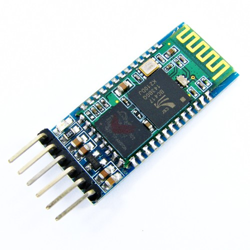
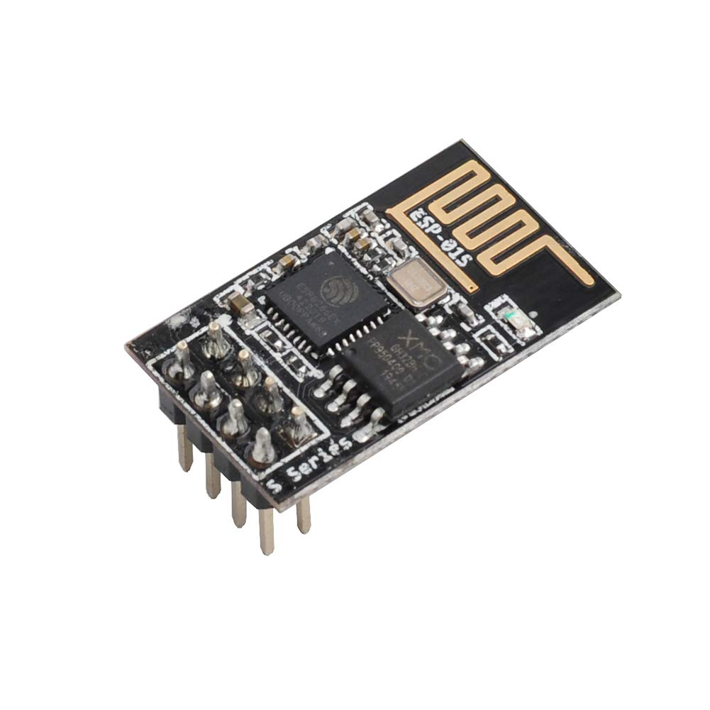
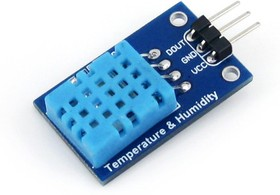
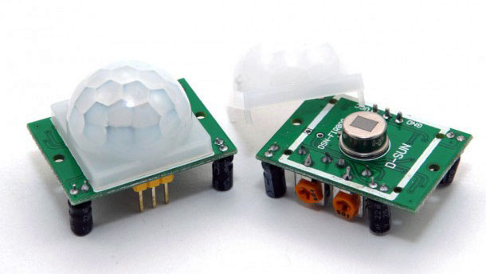
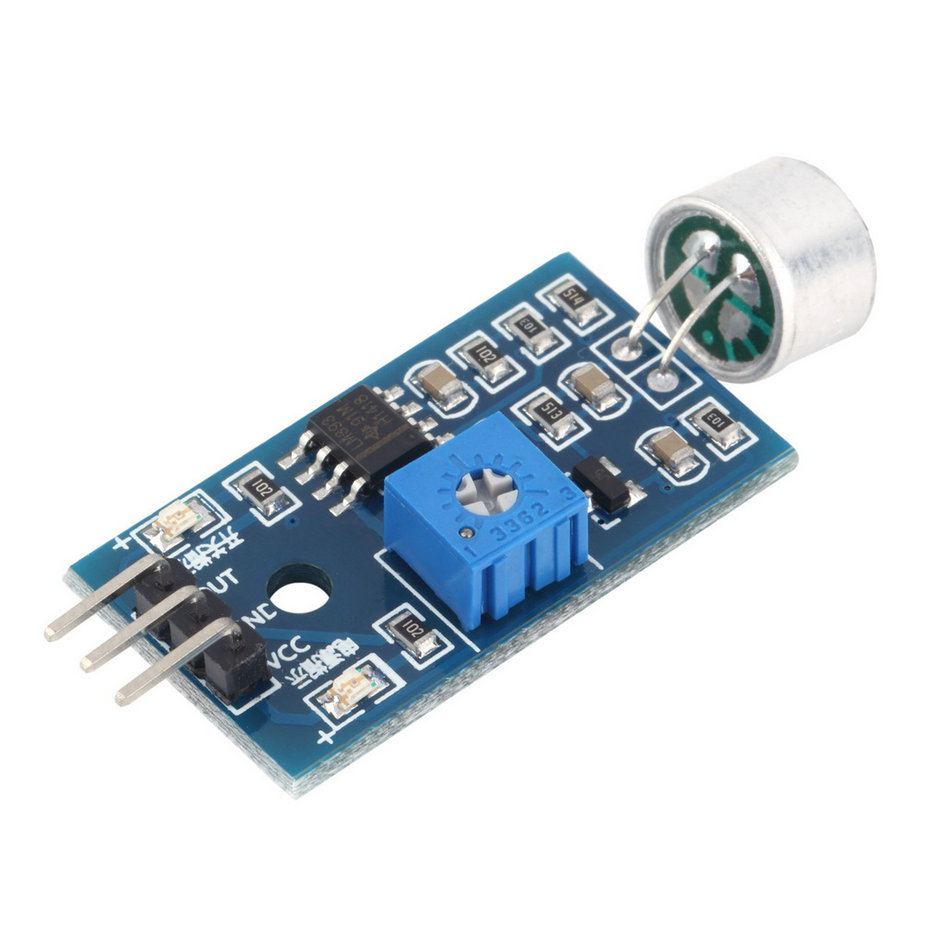
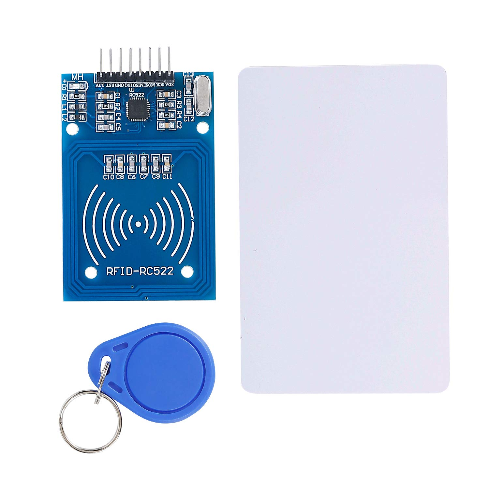

Обзор модулей/датчиков Arduino
Arduino поддерживает множество различных модулей и датчиков, которые позволяют расширить функциональность платы и реализовать разнообразные проекты. Рассмотрим несколько популярных модулей и датчиков:
Модуль Bluetooth HC-05
Модуль Bluetooth HC-05 позволяет осуществлять беспроводную связь между Arduino и другими устройствами через Bluetooth. Он широко используется для создания проектов с управлением по Bluetooth. Вот изображение модуля Bluetooth HC-05:

Модуль Wi-Fi ESP8266
Модуль Wi-Fi ESP8266 обеспечивает возможность подключения Arduino к беспроводным сетям Wi-Fi. Он позволяет создавать Интернет-связанные проекты и обмениваться данными через интернет. Вот изображение модуля Wi-Fi ESP8266:

Датчик температуры и влажности DHT11
Датчик температуры и влажности DHT11 позволяет измерять температуру и влажность в окружающей среде. Он широко используется в проектах, связанных с мониторингом и контролем условий окружающей среды. Вот изображение датчика DHT11:

Датчик движения PIR
Датчик движения PIR (Passive Infrared Sensor) обнаруживает движение в окружающей среде посредством измерения инфракрасного излучения. Он часто используется в системах безопасности и автоматизации. Вот изображение датчика движения PIR:

Датчик звука
Датчик звука позволяет измерять уровень звукового сигнала в окружающей среде. Он полезен в проектах, связанных с обнаружением шума или звукового управления. Вот изображение датчика звука:

Модуль RFID RC522
Модуль RFID RC522 позволяет считывать и записывать информацию на RFID-карты и брелоки. Он наиболее часто используется в системах контроля доступа и идентификации. Вот изображение модуля RFID RC522:

Каждый модуль или датчик Arduino предоставляет дополнительные возможности и функции для вашего проекта. Выберите соответствующий модуль или датчик в зависимости от ваших потребностей и требований проекта.